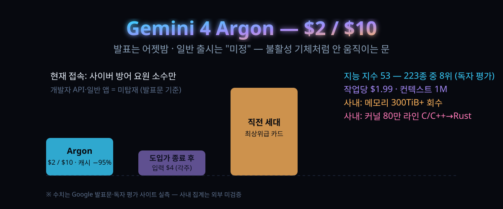

9/30 공개, 입력 $2·출력 $10 — 남의 집 서버를 500TB나 비운 Gemini 4 Argon, 정작 나는 언제 쓰나

결론부터: Google이 어젯밤(현지 9/30) 신형 프론티어 모델 Gemini 4 Argon을 발표했습니다. 값은 입력 100만 토큰에 $2, 출력 $10 — 직전 세대 최상위급과 같은 선에 중간값 카드를 던진 겁니다.
발표문에서 가장 눈에 띄는 숫자는 모델 성능이 아니라 사내 실적이었습니다. 데이터센터에서 메모리 300TiB를 찾아냈고, 80만 라인이 넘는 OS 커널을 C/C++에서 Rust로 옮기는 일에 이 모델의 에이전트를 이미 붙이고 있습니다.
그런데 정작 사용자는 못 씁니다. 발표 시점의 접속 대상은 '믿을 만한 사이버 방어 요원' 소수. 오늘 글의 초점은 이 이상한 순서입니다 — 왜 실적을 먼저 공개하고 문을 나중에 여는지, 오늘 당장 쓸 수 있는 건 뭔지까지.
30초 요약
| 항목 | 내용 |
|---|---|
| 무슨 일 | Google, 2026-09-30 신형 프론티어 모델 Gemini 4 Argon 발표 (DeepMind SVP 명의) |
| 가격 | 입력 $2 / 출력 $10 (1M 토큰당), 캐시 입력은 입력가 대비 95% 할인 — 발표문에 명시된 도입가 |
| 접근 | 지금은 'trusted cyber defenders' 프로그램 소수만. 개발자·기업·일반 공개는 "최대한 빨리"라는 표현만 발표문에 |
| 사내 실적 ① | 메모리 최적화 에이전트가 데이터센터에서 300TiB 이상 회수, 총 500TiB~1PiB 기대 (Google 자체 집계) |
| 사내 실적 ② | C/C++→Rust 이주: re2·libgav1 수만 라인부터 Fuchsia 커널 Zircon 80만+ 라인까지 |
| 독자 측정 | 제3자 평가 기준 지능 지수 53점(비교군 223종 중 8위), 작업당 비용 $1.99, 컨텍스트 1M 토큰 |
| 반응 | 해커뉴스 하루 만에 813표·댓글 500개 넘게 — "구경 못 하는 발표" 불만이 역주행 화두 |
1. 무엇이 터졌나
이름부터 정리해 보죠. Gemini 4의 처음 공개된 모델 이름이 'Argon(아르곤)'입니다. 주기율표 18번, 불활성 기체예요. 이름값대로 "아무 반응도 안 하는 모델"이라는 셀프 디스가 미리 따라붙은 셈인데, 발표문 내용은 정반대로 시끄럽습니다.
핵심 문장 세 개를 뽑으면 —
- 값: 입력 $2 / 출력 $10 (1M 토큰당 도입가). 캐시 입력은 입력가에서 95% 할인. 해커뉴스 댓글에 따르면 도입가 기간이 끝나면 입력 $4로 오른다는 표기가 각주에 달려 있습니다.
- 노출: 전면 공개가 아니라 'trusted cyber defenders'라는 사이버 방어 요원 집단부터. 미국 정부의 사전 모델 접근 자율 절차에 참여 중이라고 밝혔습니다.
- 용도 선전: 실제 소프트웨어 엔지니어링, 법무·금융 같은 기업 지식 업무, 사이버 보안 방어 — 이 세 갈래를 '프론티어급'이라 선언했습니다.
모델 스펙 자체(파라미터·학습 데이터·지식 기준일)는 발표문에 없습니다. 대신 사내에서 이미 돌리고 있는 기록부를 펼쳐 놓았죠. 이 조합이 이례적입니다.
2. 왜 대단한 얘기인가
① 성능 주장 대신 '남의 집 장부'를 먼저 보여줬다
발표문의 실적 세 건을 다시 옮겨 적으면 —
| 사내 사례 | 공개된 수치 | 성격 |
|---|---|---|
| 양자 알고리즘 최적화 | 주요 연산의 시공간 자원(큐비트×게이트)을 공개 기준선 대비 40% 절약 — 몇 분 만에 | 연구 보조 |
| 메모리 효율 | 함대 단위 프로파일링 데이터를 에이전트가 스스로 분석·적용, 전개 후 300TiB+ 회수, 총 500TiB~1PiB 기대 | 인프라 비용 |
| C/C++→Rust 이주 | re2·libgav1 수만 라인 ~ Fuchsia OS 커널 Zircon 80만 라인+; libgav1은 SIMD 32K 라인을 안전한 Rust로 대체, 최종본은 C++ 최적판 대비 2.7배 느림 | 엔지니어링 |
눈여겨볼 건 세 번째 항목의 '패배 고백'입니다. Rust로 옮긴 결과물이 원본 C++보다 여전히 느하다는 얘기를 Google이 직접 인쇄해 넣었습니다("2.7배 느림, 최적화 C++에 다가가는 중"). 자기 신제품 홍보 글에 감점 사유를 박아 넣는 회사는 좀처럼 보기 드물어요. 대신 메시지는 오히려 선명해집니다. 이 모델의 첫 고객은 외부 사람이 아니라 Google 자기 자신이고, 시험대는 벤치표가 아니라 돌아가는 시스템이라는 점이죠.
② 값표가 놓인 자리
값표가 놓인 자리를 볼까요. 독자 평가 사이트(Artificial Analysis)의 실시간 표에 따르면 Argon은 비교군 223종 가운데 지능 지수 53점으로 8위, 컨텍스트 1M 토큰, 작업당 비용 $1.99입니다. 해커뉴스 댓글의 계산이 눈에 들어오는 지점이에요 — "지능 1점 차이인데 작업당 $1.99 vs $0.79"라는 비교가 붙을 만큼, 요즘 최상위 모델 경쟁의 전장은 점수가 아니라 '점수/달러' 곡선입니다. Argon의 $2/$10·캐시 95% 할인 카드는 그 곡선을 비틀려는 포석으로 읽힙니다.
③ '출시하지 않는 발표'라는 새 관습
여기가 오늘 글의 진짜 기둥입니다. OpenAI와 Anthropic 쪽은 발표하면 그날부터 쓸 수 있는 게 이제까지의 규칙이었습니다. 이번 Google은 다릅니다. 발표는 했지만 문은 아직 일부러 열어두지 않은 상태예요. 사이버 방어 요원에게 먼저 배포하고, 안전장치를 손본 뒤에야 개발자에게 풀겠다는 계획이죠. 미국 정부의 사전 접근 절차 얘기가 공식 문장에 버젓이 들어간 걸 보면, 이건 마케팅 순서가 아니라 규제에 맞춘 순서에 가깝습니다.
그래서 해커뉴스 스레드에서 가장 크게 쌓인 불만이 "모델이 좋다 나쁘다"가 아니라 "또 대기열이냐"였습니다. 새 모델을 써 보려고 매달 AI 구독료를 내는데 정작 자기 앱 목록엔 한 세대 전 모델이 떠 있다는 하소연, "발표만 있고 사용은 없는 모델은 표 위의 유령"이라는 비아냥이 상위 댓글에 걸렸습니다.
3. 바로 써먹기
① 오늘 시점 접근 가능 여부 체크표
| 당신 위치 | 지금 Argon을 쓸 수 있나 | 대신 할 일 |
|---|---|---|
| 일반 소비자 (Gemini 앱·웹) | 아니요. 발표문에 '소비자'는 "as soon as possible" 대상일 뿐 | 구독 갱신·해지 판단을 이번 발표 하나로 하지 말 것 |
| 개발자 (API) | 아니요. 모델명·엔드포인트가 개발자 문서에 아직 없음 | 로드맵 회의에서 "예정" 항목으로만 인용 |
| 정부·금융·통신 등 규제 산업 보안팀 | 검토 대상. 'trusted cyber defenders' 트랙이 이쪽 | 벤더 계정을 통한 프로그램 문의 (Google 세일즈 경로) |
| 이미 상위 모델을 쓰고 있는 1인 개발자 | 해당 없음 (위) | Argon 정식 출시 전까지 현행 모델 유지가 정답에 가까움 |
해프닝 하나 더. 토론 스레드에서는 "내 앱엔 이미 떴다"는 스크린샷이 올라온 반면 "내 앱엔 없다"는 반박도 맞섰습니다. 문이 열리는 순서가 집단·계단식으로 진행 중이라는 뜻이겠죠. 내 화면이 전 세계 화면은 아닙니다.
② 사내 실적에서 훔칠 아이디어 한 스푼
Argon이 Google 안에서 해온 일의 뼈대는 어떤 모델이든 그대로 옮겨 심을 수 있습니다. (1) 프로파일링·로그처럼 기계가 만들어내는 데이터를 모으고, (2) 에이전트가 원인을 골라내고, (3) 수정을 적용한 뒤, (4) 자동 감사·에뮬레이션 테스트·사람 리뷰를 통과한 것만 운영에 반영하는 구조죠. 네 단계 중 모델이 맡는 건 2단계뿐입니다. 우리 팀 에이전트 파이프라인 설계표를 이 기준선 위에 다시 그려보세요.
# 사내 실적 구조를 한 줄로 옮기면
collect(telemetry) → agent.pick(candidates)
→ patch.apply() → gate(auto-audit + emulation + human-review) → ship
# 코드 5줄 요점: 모델에 '발견'만 맡기고 '출시'는 게이트가 결정
4. 해외 반응 쟁점
해커뉴스 스레드(813표·댓글 540개 넘게)의 온도 지도:
- "값과 실적은 진짜" 진영: "$2/$10에 캐시 95% 할인, 놀랍다"는 반응과 함께, 80만 라인 커널 이주를 두고 "진짜 뉴스는 모델이 아니라 Google 내부에서 이미 이만큼 쓰이고 있다는 사실"이라는 댓글이 크게 공명했습니다.
- "구경만 가능한 발표" 진영: "결국 못 쓰는 모델" "발표 자체가 사내 목표 달성용 아니냐" "학생 무료 프로모 끝나고 플래그십을 낸다는 얘기도" 등 출시 방식 성토가 가장 두터운 층입니다. "발표=사용 가능이던 관습이 깨졌다"는 자조도 보이고요.
- 검증 냉소: "모든 모델이 자기 벤치의 75%에서 1등을 하는 통계의 마법" "benchmaxxing 의문" — 벤치 자체에 대한 신뢰 침식이 기본 정서입니다. 벤치 표가 아니라 사내 운영 실적이 그나마의 신뢰 장치라는 평가도 함께 나왔습니다.
- 부수 화두: 직원들이 새 모델 회의론을 제기했다는 외신 보도가 스레드에 인용됐고, C++ 진영 원로들이 Rust 이주를 두고 "그때 왜 Carbon을 밀었나"로 과거사 논쟁을 다시 붙였습니다.
5. 주의해서 봐야 할 지점
- 300TiB/1PiB·40%·80만 라인 등 수치는 전부 Google 발표문의 자체 집계입니다. 외부 감사·재현 자료는 아직 없습니다. '기대치(total savings estimated)'와 '확정치'를 문서에서도 나눠 적었다는 점을 그대로 읽으세요.
- 도입가($2/$10)에는 종료 조건이 붙어 있습니다. 각주의 정상가($4 입력)까지 포함한 TCO로 계산하세요.
- 'trusted cyber defenders' 대상 배포라는 사실은 보안 업계에 양날입니다. 방어에 쓴다지만, 방어와 공격의 경계는 모델 능력이 아니라 정책에서 갈립니다.
- 지능 지수 8위·작업당 $1.99는 한 평가 사이트의 단일 지표입니다. 표 하나를 '전 세계 등수'로 읽지 마세요.
바로 가기
- Google 공식 발표문 — Gemini 4 Argon 공개 글
- 독자 평가 사이트 — Gemini 4 Argon 지능·속도·비용 분석
- Hacker News 토론 스레드 (813표)
같이 읽기
입력 $2·출력 $10 — 플래그십의 5분의 1값으로 나온 GPT-6.1 Sol, 어디까지 대신 맡길 수 있나 — 하루 전 OpenAI가 푼 '중간층 파괴자'와 이번 주 나란히 $2/$10에 정착한 값표의 전후관계를 읽을 수 있습니다.
Claude Sonnet 5.5 — 전 세대를 60점 차로 추월한 '작은 형제'의 실체 — 세 회사 모두 '중간 카드 값 파괴'로 방향을 잡은 2026년 가을, 세 릴리스를 같은 축에 놓고 비교할 수 있습니다.